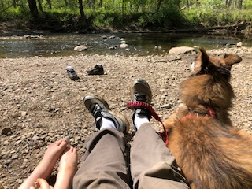

I'm an engineer and I love building things. Going through the process of understanding a problem, concepting ideas, interating designs, and finally creating an end result is thrilling. There are few things more satisfying than finally hitting on that simple, elegant solution after hours of thought.
I love learning new things. The preferred approach is dive in and try it. Different endeavours significantly afield my schooling have included CNC machining, glass making, artificial intelligence, and mindfulness. Learning by working through real problems has proven to be far more valuable than just reading about concepts. It is incredibly exciting when concepts that were in books are demostrated in the real world with a clear understanding of what is at play.
Spending time with my wife and son outside is far and above my favorite past time. We particularly enjoy the Boundary Waters in Minnesota and the beach at St George Island in Florida. When I'm not tinkering in my garage or ourdoors with my family, you might find me working towards my private pilot's license.
